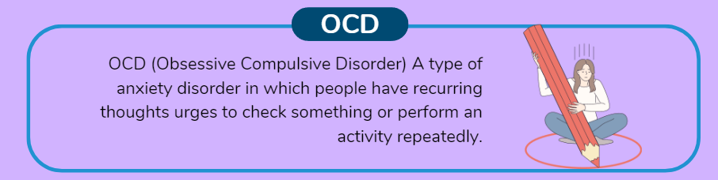

In a world that often presents us with challenges and uncertainties, our minds can sometimes respond in unexpected ways. One such response is known as Obsessive-Compulsive Disorder (OCD). This mental health condition goes beyond mere habits and involves a complex interplay of thoughts and behaviors. In this blog, we'll delve into the intricate world of OCD, exploring its features, causes, and potential avenues for managing and seeking help.

Understanding OCD:
Obsessive-Compulsive Disorder is characterized by the presence of obsessions and compulsions. Obsessions are intrusive, unwanted thoughts, images, or urges that create anxiety or distress. Compulsions are repetitive behaviors or mental acts performed to alleviate the anxiety triggered by the obsessions. Individuals with OCD often find themselves caught in a cycle of obsessions and compulsions that can significantly impact their daily lives.
The Diversity of Obsessions and Compulsions:
OCD manifests in a myriad of ways, and no two experiences are exactly the same. Some common obsessions include fears of contamination, harm coming to loved ones, or fears of making a mistake. Compulsions can involve excessive washing, checking, counting, or mental rituals aimed at neutralizing the distressing thoughts. It's crucial to remember that obsessions and compulsions can be time-consuming, cause distress, and interfere with normal activities.
Causes and Triggers:
While the exact cause of OCD is not fully understood, it is likely a result of a combination of genetic, neurological, behavioral, cognitive, and environmental factors. Brain circuitry and neurotransmitter imbalances are believed to play a role in the development of OCD. Traumatic experiences, stress, and certain life events may also trigger or exacerbate symptoms in individuals predisposed to the condition.
Seeking Help:
If you or someone you know is struggling with OCD, seeking professional help is essential. Mental health professionals, such as psychologists or psychiatrists, can diagnose OCD and provide effective treatments. Cognitive Behavioral Therapy (CBT), particularly Exposure and Response Prevention (ERP), is a common therapeutic approach that helps individuals confront and manage their obsessive thoughts and compulsive behaviors. Medications, such as selective serotonin reuptake inhibitors (SSRIs), can also be prescribed to alleviate symptoms.
Challenging Stigma:
OCD, like many mental health conditions, can carry a stigma that prevents individuals from seeking help. It's important to recognize that OCD is a real and valid disorder, and seeking treatment is a courageous step towards improving one's well-being. By fostering understanding and empathy, we can contribute to a more inclusive and supportive environment for those affected by OCD.
Living with Hope:
Living with OCD can be challenging, but with the right support, it is possible to manage symptoms and lead a fulfilling life. Remember that recovery is a journey, and progress can be achieved through dedication, self-compassion, and persistence. Connecting with support groups or online communities can offer a sense of camaraderie and shared experiences, further aiding the healing process.
Obsessive-Compulsive Disorder is a complex mental health condition that deserves our understanding and compassion. By learning about OCD, challenging stigma, and seeking help, we can create a world where individuals affected by this disorder can find the support and resources they need to lead healthy and fulfilling lives. Remember, reaching out for help is a sign of strength, and everyone deserves the opportunity to live free from the constraints of OCD.
ToBeHonest
@2023. All Rights Reserved.